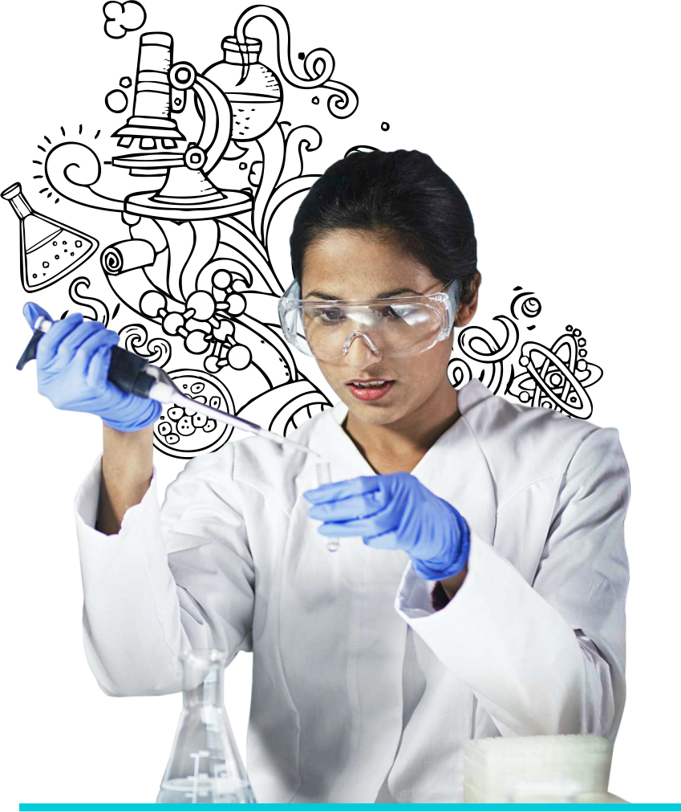

Full-time | Three-year | On-campus | Undergraduate Program
Discover cutting edge applications of Chemistry and Life Science and apply that knowledge for research, industry and entrepreneurship.
Full-time | Five-year | On-campus | Integrated Program
Explore a wide range of career options that advance human healthcare through roles in R&D, bioinstrumentation, medical imaging, biotechnology, pharmaceuticals, drug design and delivery, medical equipment manufacturing and supplies, hospital and healthcare industry.
Full-time | Two-year | On-campus | Postgraduate Program
Equip yourself for careers in a variety of fields that include drug and pharmaceutical industries, research laboratories, cancer research institutes, waste management, environment control and food processing.
Full-time | Two-yearOn-campus | Postgraduate Program
Choice of specializations in Plant Sciences, Animal Sciences, Biochemistry and Environmental Science, prepares candidates for roles in various positions in public & private sectors, government organizations, government and private schools, biotechnology firms, CROs, agricultural research organizations, medical research institutes, medical testing laboratories, food institutes, Wildlife and Fishery Departments, R&D firms, administrative agencies, and the pharmaceutical industry. Alternatively, one can also opt to pursue higher doctoral studies or work as an academician in a college/institute/university.
Full-time | Two-yearOn-campus | Postgraduate Program
The biotechnology industry is a vital economic driver generating significant revenues and recognized as a priority sector. High growth and rapid innovation are fueling the demand for skilled biotech professionals. This demand will continue to rise as biotechnology finds application in a variety of fields that include drug and pharmaceutical industries, research laboratories, CROs, cancer research institutes, Quality Assurance/Regulatory Affairs, clinical research, process development science, food and animal sciences, and environment biotech fields such as waste management and environment control.
Full-time | Two-yearOn-campus | Postgraduate Program
With the pandemic and rapid rise in infectious diseases, there is an increase in demand for microbiologists globally. It is recognized as one of the key priority sectors by the government for the Indian industry, it finds application in a variety of fields that include drug and pharmaceutical industries, vaccine and antibiotics development industries, research laboratories, clinical research, Quality Assurance/Regulatory Affairs, food industries such as dairy and agriculture, environmental industries like water management sectors and environmental remediation, chemical technology, and nanotechnology.
